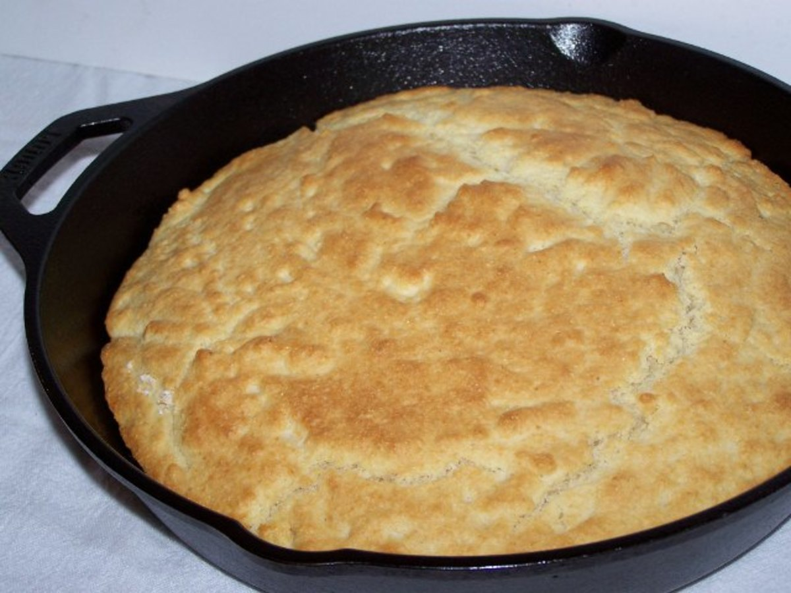

Pan Bread

Description
I've recently discovered the recipe of this bread from a Youtube video, it's the most low effort, low cost bread you can cook up within 2 hours, and the texture is awesome!
Ingredients
- 2 and 1/4 cups of flour
- 1 tsp of yeast
- 1 tsp of salt
- 1 tsp of sugar
- 1 cup of lukewarm water
- 1 tbs of olive oil.
Steps
- Mix flour, yeast, sugar and salt
- Add water and mix
- Cover and let the dough rise for an hour
- Grease the pan with olive oil
- Degas dough by rolling the dough with a spatula
- Sprinkle with flour and roll a few more times
- Put the dough in the pan
- Cover and let the dough rise for 30 minutes
- Cover and cook over low heat (20-25 min)
- Turn over and cook for another 5 minutes without the lid
- That's it, enjoy your cripsy bread!